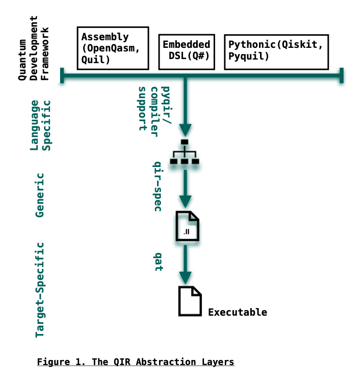

Why do we need it?
Contents
Why do we need it?#
The quantum computing field is faced with a surge in numbers of choices for hardware, software toolkits, and languages. The QIR ecosystem creates abstraction layers and tools required to facilitate interoperability for computation of hybrid algorithms. As shown in Figure 1, the QIR compilation model has 3 abstraction layers, each supported by an ecosystem tool. Starting with the language-specific layer of the compilation, the QIR ecosystem receives instructions coded in a high-level quantum language, such as Q#, Pyquil, Qiskit and Cirq. By the end of this layer, generic QIR will be generated for enabled compilers, or by using Pyqir. The role of qir-spec is to provide representations for quantum programs in LLVM, to map the source code to QIR. Users can extract generic and transformed QIR code in .ll files. The QAT tools transform and analyze the instructions during generic and target-specific phases.

Each of the green layers in Figure 1 is accompanied by a tool maintained by the QIR Alliance. Collectively, they provide front-end, middle-ends and back-end support for other enabled compilers or languages compatible with Pyqir. If you were to take an abstraction elevator, you would find domain specific and quantum assembly languages at a higher level than the QIR ecosystem. Input instructions for QIR can be in Q# which is a high-level domain specific programming language or potentially OpenQASM 3.0, a multi-level IR assembly language. Although assembly languages are considered low level languages, they reside above the QIR compilation model. In Figure 1, the source code can be in a .qasm, .py or .qs file. Using the QIR tools, we can further lower instructions to target code, while applying cross-platform optimizations, analyses, and validations.
Hardware vender-designed compilers mostly support code generation mapped to the requirements of their own hardware. However, the QIR aims to provide means for hardware-agnostic workflow. It uses compiler profiling to define requirements of target machines. The generic QIR is lowered according to target profiles. Users can target multiple machines with one set of instructions, since the adaptations needed for each are abstracted out.
The current limitations of noisy quantum devices have resulted in a strong shift towards hybrid approaches, utilizing classical (e.g., CPU, GPU, FPGA) and quantum hardware resources together to complete the computational model . The QIR is a hybrid compatible compiler. The LLVM backend of the ecosystem allows for compiler native classical control at the IR level, whereas most quantum compilers add classical support to a purely quantum compiler. The QIR ecosystem facilitates interoperability between languages and compiler libraries, thus transformations, analyzes, and optimizations. Withal, it supports interoperability for heterogeneous quantum-classical hardware architecture. This bridges the gap to place the QPU as an accelerator in HPC architectures.
The QRAM, Quantum Random Access Memory, model was proposed to describe algorithms for integrated hardware, by E. Knill in 1996. Back then, the phrase “hybrid algorithm” was not yet in use. However, the need was foreseen. Since then, the field has grown with numbers of designs and developments of quantum-classical algorithms. It is considered a hybrid algorithm if, to complete its abstract computational model, both classical and quantum processes are required. In other words, one cannot fully describe the computational model of a hybrid algorithm without referring to its classical computation.
Motivations for QIR Community/ Alliance?#
Interoperability opens doors to cross-fields problem-solving